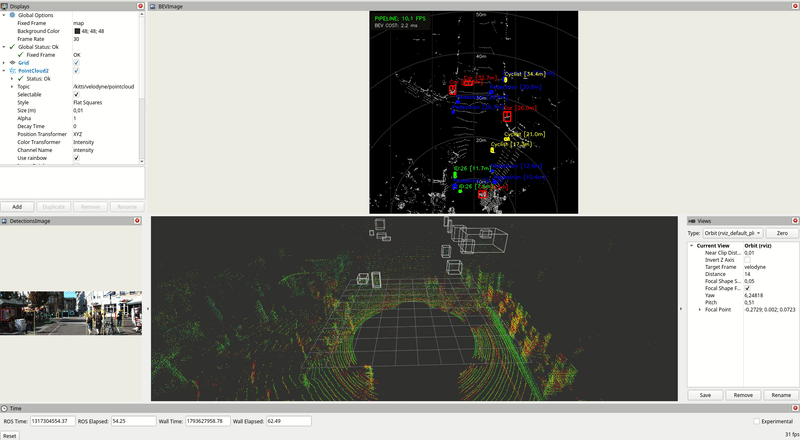

- 3D Point Cloud Processing: Implemented LiDAR ground-plane segmentation using RANSAC, followed by spatial filtering and DBSCAN clustering with Open3D.
- LiDAR-Camera Sensor Fusion: Integrated YOLO-based 2D camera detections with 3D LiDAR clusters by projecting cluster centroids into image space and associating them with nearby detections.
- ROS 2 Architecture: Published class-labeled 3D detections and Bird’s-Eye-View (BEV) visualizations through dedicated ROS 2 topics.
- Codebase Ownership: Rebuilt and modernized the pipeline from scratch based on a conceptual Medium blueprint, resulting in a nearly entirely new, optimized codebase.
- Technologies: Python, ROS 2 Jazzy, Open3D, OpenCV, PyTorch, ONNX Runtime, CUDA, NumPy, and the KITTI dataset.
Demo
